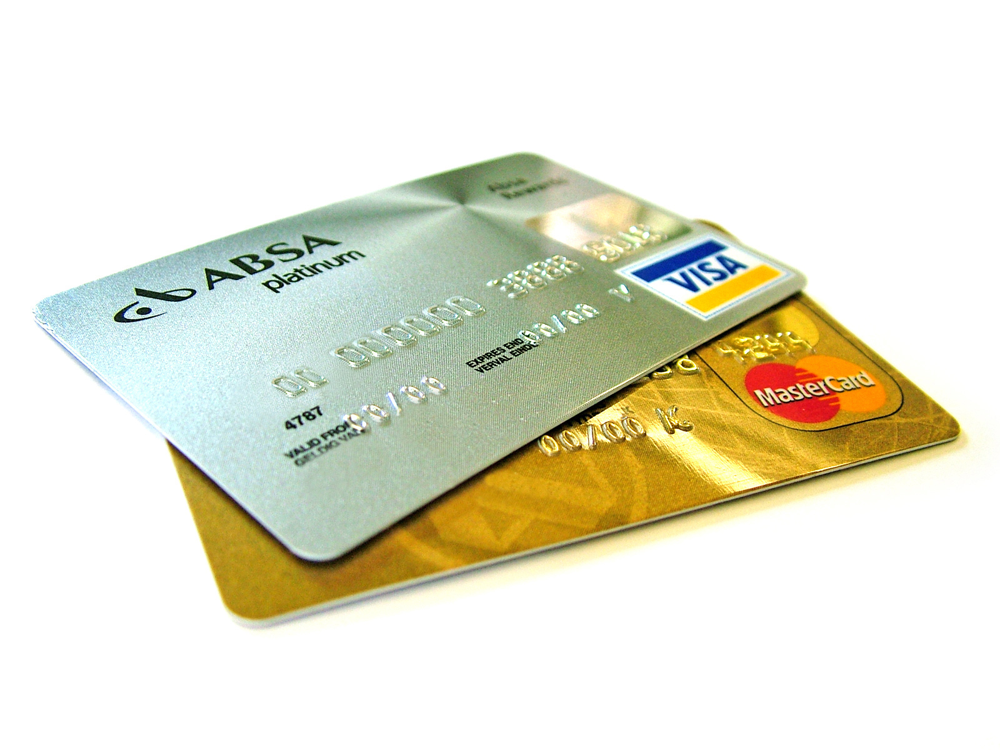

Kredit kartalari qanday ishlaydi: APR, imtiyozli davr va minimal toʻlov
Kredit karta — bankdan qarzga olingan aylanma kreditdan foydalanish vositasi. Quyida kredit karta nima ekani, kredit limiti, yillik foiz stavkasi (APR) va foiz qanday hisoblanishi, imtiyozli davr (grace period) va uni saqlab qolish, minimal toʻlov hamda faqat minimal toʻlashning oqibati, naqd avans va toʻlovlarni taqsimlash tartibi faqat rasmiy manba — AQSh isteʼmolchilarni moliyaviy himoya qilish byurosi (CFPB) va Federal savdo komissiyasi (FTC) resurslari asosida, neytral tarzda tushuntiriladi. Bu material — mexanikani tushuntiruvchi maʼlumotnoma, moliyaviy maslahat emas.

Kredit karta — AQShdagi kundalik moliyaning keng tarqalgan vositasi, lekin uning mexanikasini tushunmaslik qimmatga tushishi mumkin. Quyida kredit karta nima ekani, yillik foiz stavkasi (APR) va foiz qanday hisoblanishi, imtiyozli davr (grace period), minimal toʻlov, naqd avans va toʻlovlarni taqsimlash tartibi faqat obroʻli manbalar — AQSh isteʼmolchilarni moliyaviy himoya qilish byurosi (CFPB, consumerfinance.gov) va Federal savdo komissiyasi (FTC) resurslari asosida, neytral va faqat faktlarga tayangan holda tushuntiriladi. Bu maqola — umumiy maʼlumot beruvchi maʼlumotnoma, moliyaviy maslahat yoki tavsiya emas.
Kredit karta nima
Kredit karta — bank yoki moliya tashkiloti bergan, aylanma kreditdan (revolving credit) foydalanish imkonini beruvchi karta. Undan foydalanganda siz oʻz pulingizni emas, bankdan qarzga olinayotgan pulni sarflaysiz va keyinchalik uni qaytarasiz. Bank har bir karta uchun kredit limiti — qarzga olish mumkin boʻlgan eng yuqori summani belgilaydi. Bu debet kartasidan farq qiladi: debet kartasi bevosita sizning bank hisobingizdagi pulni ishlatadi, kredit karta esa qarz beradi. Har oy bank hisob-faktura (statement) yuboradi; unda davr mobaynidagi xaridlar, umumiy qoldiq va toʻlov muddati koʻrsatiladi.
APR va foiz qanday hisoblanadi
APR (Annual Percentage Rate) — yillik foiz stavkasi, yaʼni qarzdan foydalanish narxi. Qonunga koʻra, bank APRni siz kartadan foydalanishga rozilik bildirishdan oldin oshkor qilishi shart. CFPB tushuntirishicha, koʻplab banklar foizni oyma-oy emas, kunlik — hisobning oʻrtacha kunlik qoldigʻi asosida hisoblaydi (kunlik davriy stavka). Foiz har kuni hisoblanib borgani sababli, qoldiqning bir qismini yoki hammasini qancha tez toʻlasangiz, shuncha kam foiz toʻlaysiz. Bitta kartada turli turdagi operatsiyalar uchun turli APR boʻlishi mumkin, va hisob-fakturada har bir toifa alohida koʻrsatiladi.
Imtiyozli davr (grace period)
Imtiyozli davr — hisob davri tugashi bilan toʻlov muddati oʻrtasidagi oraliq. CFPBga koʻra, agar kartada imtiyozli davr boʻlsa va siz qoldiqni har oy muddatida toʻliq toʻlasangiz, yangi xaridlarga foiz toʻlamasligingiz mumkin. Banklar imtiyozli davr berishga majbur emas, biroq koʻpchilik kartalar xaridlar uchun uni taqdim etadi. Muhim shart: imtiyozli davr odatda faqat yangi xaridlarga va faqat siz avval qoldiq olib qolmagan boʻlsangiz amal qiladi. Bir marta qoldiqni toʻliq toʻlamay qoldirsangiz, imtiyozli davr yoʻqolib, foiz xarid qilingan kundan hisoblanishi mumkin.
Minimal toʻlov va qarz tuzogʻi
Minimal toʻlov — har oy toʻlanishi shart boʻlgan eng kichik summa. Muddatida minimal toʻlovni amalga oshirish oʻsha davr uchun toʻlov majburiyatini bajaradi va kechikish jarimasidan saqlaydi; biroq u foizning oʻsishini toʻxtatmaydi va imtiyozli davrni avtomatik saqlab qolmaydi. Agar siz faqat minimalni toʻlab, qolgan qoldiqni olib qolaversangiz, qolgan summaga foiz hisoblanaveradi — natijada qarzni uzish uzoq yillarga choʻzilishi va toʻlanadigan umumiy summa dastlabki xariddan ancha koʻp boʻlishi mumkin. CFPB kredit karta hisob-fakturalarida aynan shu — faqat minimal toʻlanganda qarz qancha vaqtda uzilishi — koʻrsatilishini talab qiladi.
Naqd avans va boshqa haqlar
Kredit kartadan naqd pul yechish — naqd avans (cash advance) deyiladi. Naqd avansga odatda imtiyozli davr qoʻllanmaydi: foiz pul yechilgan kundan boshlanadi va koʻpincha xaridlarga nisbatan yuqoriroq APR hamda qoʻshimcha haq olinadi. Kartalarda boshqa haqlar ham boʻlishi mumkin — yillik haq (annual fee), kechikish jarimasi (late fee) va limitdan oshib ketish haqi. Bu shartlarning barchasi karta ochishdan oldin beriladigan maʼlumot varagʻida (Schumer box) oshkor qilinadi.
Toʻlovlar qanday taqsimlanadi
2009-yilgi CARD qonuni (Credit CARD Act) isteʼmolchilarni himoya qiluvchi bir qancha qoidalarni oʻrnatdi. Shulardan biri: agar siz minimal toʻlovdan koʻproq toʻlasangiz, bank minimaldan oshgan qismni avvalo eng yuqori foizli qoldiqqa, qolganini esa stavka kamayib borish tartibida boshqa qoldiqlarga yoʻnaltirishi shart. Shu qonun banklar APRni har qanday vaqtda, sababsiz oshirishini ham cheklaydi va hisob-faktura muddatlari boʻyicha himoya beradi.
Kredit tarixi bilan bogʻliqligi
Kredit kartadan foydalanish kredit tarixiga taʼsir qiladi. Toʻlovlarni muddatida amalga oshirish va kredit limitining past qismidangina foydalanish (foydalanish darajasi — credit utilization) kredit reytingiga ijobiy taʼsir koʻrsatishi mumkin; kechiktirilgan toʻlovlar esa salbiy taʼsir qiladi. Kredit kartasi va kredit tarixi haqida batafsil maʼlumot bank hisobi va kredit tarixiga oid alohida maʼlumotnomada keltirilgan.
Yakuniy eslatma
Kredit karta — qulay, ammo foiz va haqlar bilan bogʻliq vosita; undan oqilona foydalanish har kimning moliyaviy holatiga bogʻliq. Bu maqola faqat umumiy maʼlumot beradi va moliyaviy maslahat hisoblanmaydi; muayyan karta shartlari karta beruvchining rasmiy hujjatlarida va CFPB resurslarida koʻrsatiladi.
Manbalar
- CFPB — Credit card key terms (APR, grace period, minimal toʻlov, kredit limiti)
- CFPB — How does my credit card company calculate the amount of interest I owe? (kunlik oʻrtacha qoldiq)
- CFPB — What is a grace period for a credit card? (imtiyozli davr)
- CFPB — What is a minimum payment? (minimal toʻlov)
- CFPB — Credit CARD Act of 2009 report (toʻlov taqsimoti, himoya qoidalari)